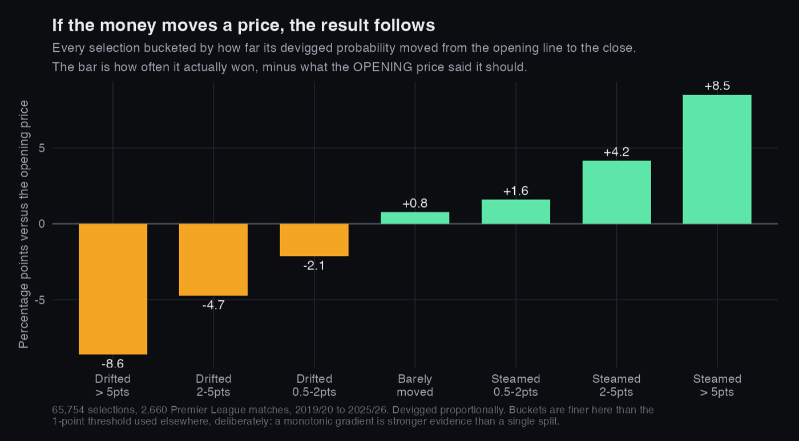
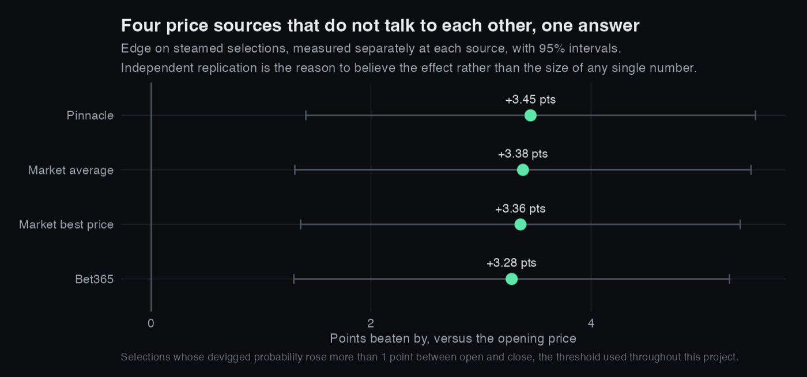
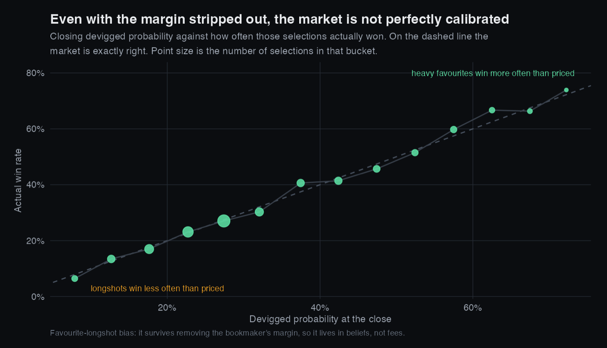
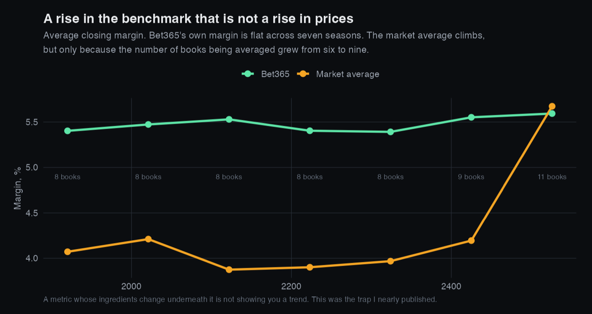

Does the Market Know Something?
Seven seasons of Premier League prices from 16 bookmakers, stripped of the margin they have built into them and tracked from the opening line all the way to the close. If the money moves a price, does the result actually follow?
The question
A bookmaker's opening price is really just a forecast, and by the time a match kicks off that price has been pushed around by everyone who bet into it. The belief across the industry is that the closing line is the sharpest number available, meaning that the movement of the market itself carries information.
I wanted to test that on real prices instead of taking it on faith, because it is the exact assumption sitting underneath the job I did at Fanatics. When a line moves against you, do you respect it or fade it?
Getting the data honest
You can't compare raw odds to reality directly, because every price has the bookmaker's margin baked into it. If you add up the implied probabilities across a match's three outcomes you get more than 100%, and that excess is called the overround. So the pipeline does three things before anything else happens:
- Stack and tidy. Seven season files, each 165 columns wide, reshaped into one long table of 131,793 individual prices keyed on match, bookmaker, outcome and phase, where phase is either the opening price or the closing one.
- Measure the margin.
margin = sum(1/odds) − 1, computed for each bookmaker on each match. - Devig. Rescale each price into a true probability using
p = (1/odds) / sum(1/odds), so that a forecast can be scored against what actually happened. This is proportional devigging, which is the simplest method. Shin and power devigging are the more sophisticated alternatives and are the natural next step.
The trap I walked into first. Bookmaker coverage turned out to be badly unbalanced, since only three of the 16 books span all seven seasons and several of them only show up in 2025/26. That means ranking books on their raw average margin actually ranks when they happened to be tracked rather than how they price. Every comparison had to become a paired one, so a book's margin minus the market average margin on the same match and the same phase. Doing that changes the answer completely. Ladbrokes looks like the worst book in the sample at 6.51% if you take the naive average, but sits sixth of fourteen at +0.90% once it is paired properly.
What I found
Market movement predicts outcomes. Selections whose price shortened between the open and the close, which the industry calls steaming, won 3.4 percentage points more often than their opening devigged probability said they should. Selections that drifted the other way underperformed theirs by 5.0 points.
Splitting it into two groups understates the case. If the effect is real then the size of the move should matter, not just its direction, and it does:

The reason I believe that isn't the size of the number by itself. It's that the same number shows up independently across books that set their prices separately:
| Price source | Edge on steamed selections |
|---|---|
| Market average | +3.38 pp |
| Pinnacle | +3.45 pp |
| Best available price | +3.36 pp |
| Bet365 | +3.28 pp |

Three further results came out of the same pipeline:
- Favourite and longshot bias survives devigging. Even once the margin is removed, heavy favourites are still underpriced by about 3.4 points and longshots are overpriced by roughly 0.9. That tells me the bias lives in what the market believes, and not only in what it charges.
- Empty stadiums cost the home team. The home win rate fell from 45.3% in 2019/20 to 37.9% during the 2020/21 season played without crowds. Across the five seasons since it has averaged 44.2%, so most of the drop reversed and some of it did not. One season either side is too thin to say more than that, and the 2019/20 baseline is itself contaminated, since the last 92 matches of it were played behind closed doors. I went after this question properly in the home advantage project, on 31,356 matches across eleven divisions.
- The benchmark itself moves. The market average margin looks like it jumps to 5.67% in 2025/26, but Bet365's own margin is basically flat across all seven seasons, going from 5.40% to 5.59%. The entire jump comes from the set of tracked books growing from six to nine. A metric whose composition changes underneath it isn't showing you a trend, it's showing you a change in bookkeeping.


Where it stands
The data pipeline is finished and verified. It is two R scripts that run end to end from a cold start, with assertions on the column counts, the bookmaker counts, and a self consistency check where the market average compared against itself has to come out at exactly zero. Every finding above is computed and checked.
A Tableau Public version of these charts is the next thing I am building on this project. It will not add a finding, since everything above is already computed and checked, but Tableau is the tool most analyst roles actually use and I would rather learn it on data I understand than on a sample workbook.
What I'd do differently
- Proportional devigging is the crude method. Shin's method accounts for insider action and would probably sharpen the favourite and longshot result.
- Right now steaming is defined by a threshold on the probability change, which turns a continuous thing into three buckets. Treating it continuously would be more defensible.
- This is only one league, and the margin findings almost certainly don't carry over to thinner divisions. That is exactly what the Stake Factor project went on to test, and it turned out to be right.